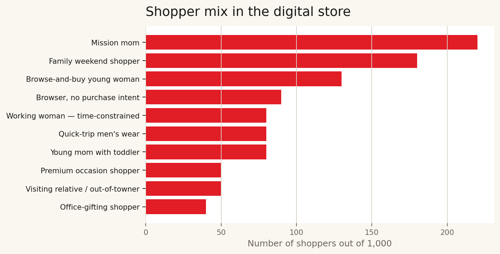
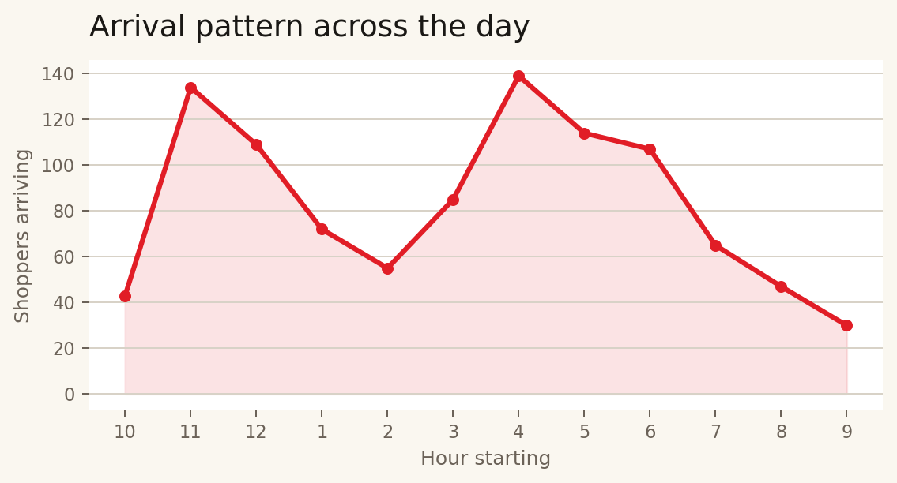
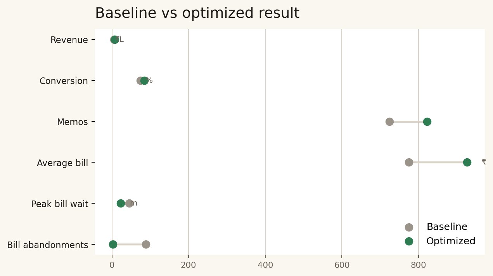
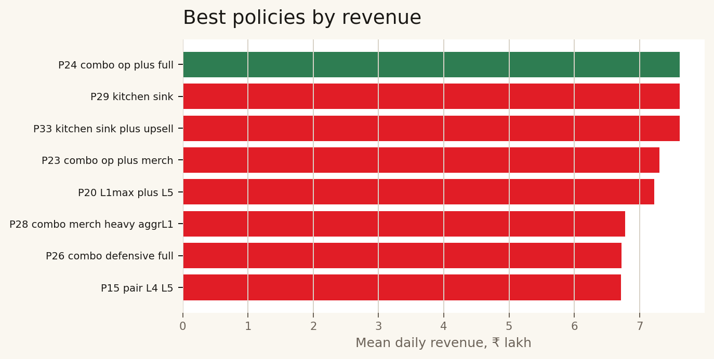

This is a simple view of the digital store model. We created a digital clone of one V-Mart Unlimited store on a Diwali Saturday, then tested better ways to run the same store with the same shopper demand.
| Lever | Baseline | Optimized policy |
|---|---|---|
| Billing | Counters open after queues form. | Counters open before peak demand. |
| Staffing | Breaks overlap and staff stay fixed in zones. | Breaks are staggered and staff move to busy zones. |
| Trial rooms | Loose management and no active item cap. | Attendant at the women trial bank with a four-item cap. |
| Merchandising | Power wall and impulse fixture stay mostly static. | Key displays refresh during the day. |
| Cross-sell | Related products sit in different areas. | Outfit bundles and footwear are placed closer together. |
The model uses 100 SKUs across apparel, footwear, accessories, kids, infants, and entry displays. The table below summarizes the SKU mix by store area.
| Store area | SKUs | SKU types | Diwali price range | Example items |
|---|---|---|---|---|
| Women ethnic | 16 | kurti, kurti_set, lehenga, saree, suit_set | ₹491 to ₹3,749 | Cotton printed straight kurti, 3/4 sleeve, knee-length; Rayon A-line kurti with embroidered yoke |
| Women western | 15 | bottoms, co_ord, dresses, innerwear, nightwear... | ₹239 to ₹1,199 | Solid cotton round-neck t-shirt; Printed casual top, half sleeve |
| Kids | 15 | boys_4_8, boys_8_14, boys_ethnic, footwear, girls_4_8... | ₹359 to ₹1,169 | Printed t-shirt and shorts set; Cotton shirt with full pants |
| Women footwear and accessories | 15 | bags, dupattas, footwear_ethnic, footwear_flats, footwear_heels... | ₹164 to ₹935 | Basic flat sandal, PU strap; Printed ballerina flats |
| Men casual | 13 | bottoms, innerwear, nightwear, shirt, tshirt | ₹239 to ₹959 | Solid round-neck cotton t-shirt; Printed polo t-shirt, cotton blend |
| Men formal and ethnic | 9 | formal_shirt, formal_trousers, kurta, kurta_set | ₹559 to ₹1,949 | Solid formal shirt, cotton, full sleeve; Striped formal shirt, cotton blend |
| Men footwear and accessories | 9 | accessories, footwear_casual, footwear_ethnic, footwear_formal | ₹224 to ₹879 | Black formal lace-up shoe, synthetic leather; Brown formal slip-on |
| Infants | 6 | infant_boys, infant_girls, newborn | ₹279 to ₹479 | Romper, cotton, printed; T-shirt and shorts set |
| Power wall | 2 | unisex_acc | ₹224 to ₹374 | Sunglasses, plastic frame, UV-protected; Cotton cap, printed |
Each digital shopper belongs to a profile with a different mission, basket size, patience level, and shopping path.
| Profile | Share | Typical basket | Main zones | Plain-language behavior |
|---|---|---|---|---|
| Mission-driven mom | 22% | 4 to 7 items | womens ethnic, kids | Family group of 2-4 including 1-2 kids. |
| Young mom with toddler | 8% | 2 to 4 items | infants, kids | First-time Diwali shopping with a 0-3 year old in tow. |
| Family weekend shopper | 18% | 6 to 10 items | womens ethnic, mens formal ethnic | Group of 4-6, multi-generational, Diwali-and-wedding-season mode. |
| Browse-and-buy young woman | 13% | 2 to 4 items | womens ethnic, womens western | Solo or with a friend. |
| Working woman - time-constrained | 8% | 1 to 3 items | womens ethnic, womens western | Solo female, post-work or lunch-break. |
| Premium occasion shopper | 5% | 1 to 2 items | womens ethnic, womens fa | Solo or with one friend. |
| Quick-trip men's wear | 8% | 1 to 2 items | mens casual, mens formal ethnic | Solo male, often dropped off by family. |
| Office-gifting shopper | 4% | 4 to 6 items | mens formal ethnic, womens ethnic | Solo, buying 4-6 similar kurtas to give as Diwali gifts to office team or family. |
| Visiting relative / out-of-towner | 5% | 3 to 5 items | womens ethnic, mens formal ethnic | Visiting Bangalore for Diwali. |
| Browser, no purchase intent | 9% | 0 to 1 items | power wall | Walks 1-2 zones, walks out. |


These distributions are why the store gets stressed in specific places. Families and mission-led shoppers create larger baskets. Evening arrivals create pressure at billing and trial rooms.

